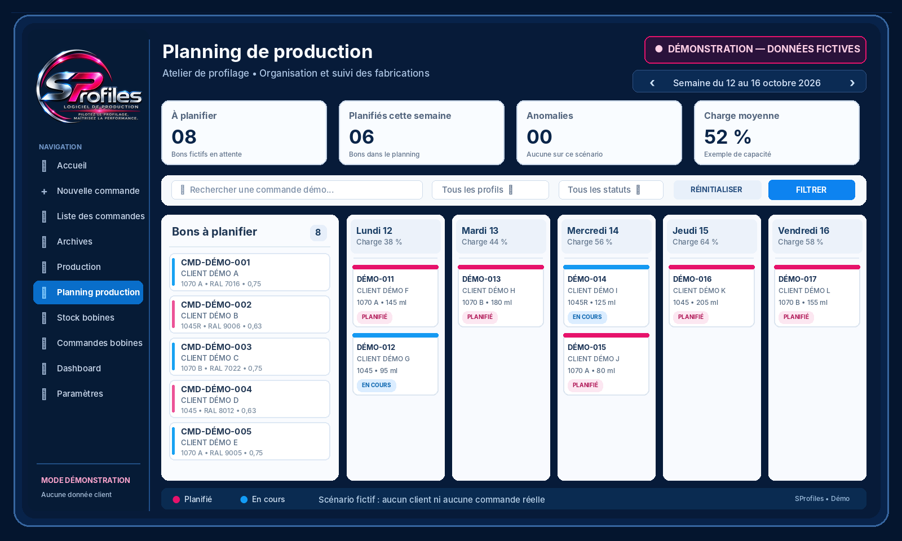

▤
Commandes & bons
Saisie, numérotation, archivage et suivi de l’avancement.
Pilotez le profilage. Maîtrisez la performance. Une application pensée pour centraliser les activités des ateliers de profilage de tôles métalliques.

Aperçu d’une interface de suivi de production issue des maquettes du projet.

Saisie, numérotation, archivage et suivi de l’avancement.
Gestion des bobines, réservations, consommations et alertes.
Suivi des charges, calculs de surfaces et tableaux de bord.